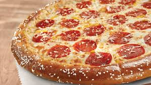

Pizza Recipe

Description
Pizza and pretzels - two of the greatest things in the world! When you combine them, it's a delicious treat. This recipe will have your friends and family begging for more.
Owner link is Pizza Crust Pizza.
Ingredients
Pizza
- 1 1/4 cups warm water
- 1 1/2 tablespoons granulated sugar
- 1 1/4 ounce envelope active dry yeast
- 1 teaspoon kosher salt
- neutral cooking oil, for greasing bowl
- cooking spray
- 1 tablespoon baking soda
- 2 tablespoons hot water
- 2 cups shredded low-moisture, part-skim mozzarella cheese
- 30 pepperoni slices
- 1 tablespoon unsalted butter, melted
- pretzel salt
Cheese Sauce
- 1/3 cup whole milk
- 8 ounces processesed cheese, cubed
- 1 tablespoon unsalted butter
- 1/2 teaspoon onion powder
- 1/2 teaspoon paprika
- 1/2 teaspoon garlic powder
- 1/4 teaspoon kosher salt
Steps
- Gather all ingredients.
- Prepare the pizza. Place warm water, sugar, and yeast in the bowl of a stand mixer fitted with a dough hook. Whisk until just combined, and let stand until foamy, about 5 minutes.
- Add flour and salt; mix on low speed until just combined, about 20 seconds. Increase speed to medium, and knead until dough is smooth and elastic, about 5 minutes.
- Shape dough into a ball, and transfer to a large greased bowl, rotating dough to coat all sides in oil. Cover with plastic wrap or a clean damp towel; let rest in a warm area until doubled in size, 25 to 30 minutes.
- Preheat the oven to 425 degrees F (230 degrees C) with a pizza stone or overturned large rimmed baking sheet on the center rack. Grease a large 15-inch pizza pan with cooking spray. Punch down dough, and transfer to the prepared pizza pan. Using clean hands, press dough to the outer edge of the pan (dough should be 15 inches in diameter). Fold 1 to 1 1/2-inches of dough’s outer edge over itself to create adefined crust (dough should be 13 inches in diameter to the outer edge).
- Combine baking soda and hot water in a small bowl. Using a pastry brush, brush the top and outer edges of crust; discard any remaining baking soda mixture.
- Bake crust on pizza stone in preheated oven until crust is golden brown, about 8 minutes.
- Meanwhile prepare the cheese sauce: Bring milk to a simmer in a small saucepan over medium. Reduce heat to low; add processed cheese, in batches, whisking constantly until melted, about 5 minutes. Whisk in butter, onion powder, paprika, garlic powder, and salt until smooth. Set aside until ready to use.
- Spread cheese sauce evenly over par-baked crust. Sprinkle with an even layer of mozzarella cheese, and top evenly with pepperoni slices. Brush outer crust with melted butter, and sprinkle evenly with pretzel salt.
- Bake in the preheated oven at 425 degrees F (230 degrees C) until mozzarella is slightly browned and melted and crust is cooked through, about 8 minutes. Remove from oven, and let cool on pizza pan for 5 minutes. Slice and serve.